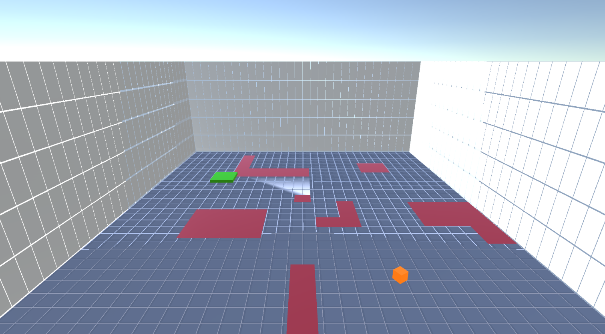
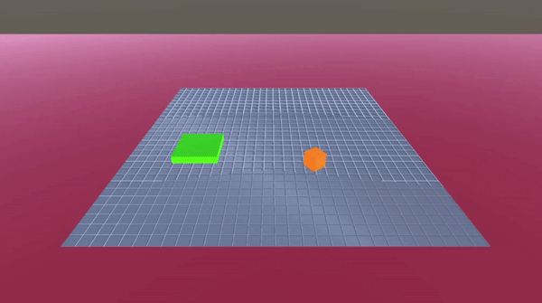
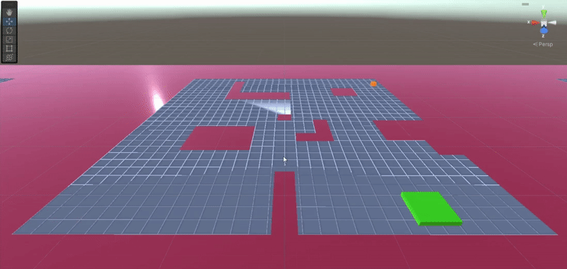

:( Sorry, this page doesn't exist in english yet. Click here to see the summary in french.

Durant l'été 2023, j'ai eu l'occasion de travailler sur
plusieurs projets : SFTX2U , MiniCarGame, mais aussi un projet de machine learning. Lors de
ce projet, j'ai voulu apprendre à une IA a retrouver et atteindre un but en passant des obstacles. Ce projet
me servait de test afin de réaliser une IA de machine learning sur le projet Unity SFTX2U (n'a pas été
réalisé au final).
Pour ce projet, j'ai décidé de me fournir du toolkit ML-agents car c'etait la solution
officielle de Unity-Technologies pour réaliser du machine learning sur Unity. Le toolkit fournit un
réseau
neuronal, sur lequel on peut agir grace a un fichier de configuration .yaml. Une fois configuré, il
est possible de lancer l'entrainement de l'IA via un powershell. Ceci lance un environnement virtuel python
qui se connecte à Unity au lancement de la scène et récupère les inputs et renvoie des outputs vers
l'agent.

Cependant, il ne suffit pas de lancer la simulation pour que tout marche, il faut aussi créer, dans
Unity un agent capable de recevoir des inputs et de renvoyer des outputs. Tout ça se fait très
facilement techniquement avec des composants d'objet et des méthodes à Override, cependant il faut réflechir
à ce qu'on ajoute dedans, car les inputs/outputs de l'agent (IA) et l'environnement sont ce qui fait
réussir/rater un entrainement.
Un agent qui prend plus d'inputs que nécessaire ou qui renvoie des outputs inutiles ralentira
l'entrainement ou le rendra inefficace car trop complexe.Aussi, un agent avec un environnement trop
compliqué pour son nombre de neurone ou de layers l'empechera
de réussir, et inversement un environnement trop simple rendrait juste inutilement long l'entrainement.
Dans mon cas, j'ai fait plusieurs étapes avec un agent qui prend en compte de plus en plus d'inputs
et avec de plus en plus d'aleatoire dans l'environnement. Au départ, l'agent ne connaissait que sa position
et celle de son but (toujours a sa droite). Ensuite, l'agent ne connaissait plus les positions mais pouvait
voir en face de lui grace a 10 capteurs à hauteur d'oeil sur 80 degrés, et tourner sur lui-même, et le but à
atteindre etait positionné aléatoirement dans les environs. Pour finir, j'ai ajouté des trous aléatoires
dans le terrain et la capacité de voir au sol grace a d'autres capteurs.


Finalement, j'ai réussi a atteindre mon but et faire un agent qui arrive très régulièrement (plus de 9
fois sur 10) à atteindre un but dans un environnement avec des obstacles aléatoires, et ce dans un temps un
minimum optimisé.
RÉSUMÉ DU PROJET :
OUTILS UTILISÉS
- utilisation de la bibliothèque
python
ML-agents
 interaction avec
ML-agents et mise a jour des configurations de réseau neuronal via powershell
interaction avec
ML-agents et mise a jour des configurations de réseau neuronal via powershell
COMPÉTENCES ACQUISES / AMÉLIORÉES
- Compréhension des réseaux neuronaux
- Création d'environnement adapté au machine learning